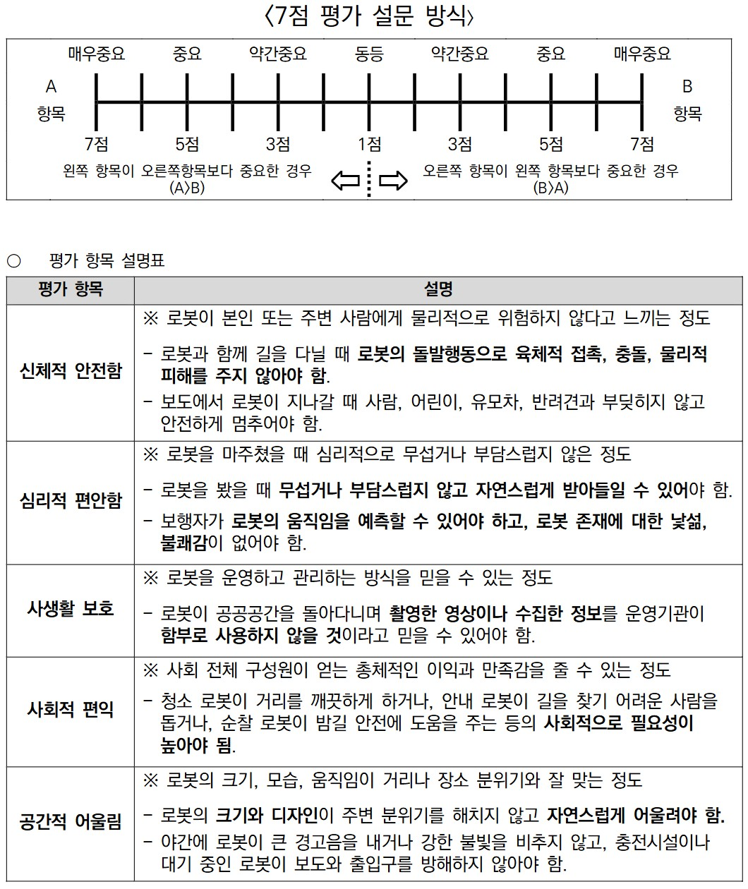

설문 안내
안녕하십니까.
본 조사는 도시 공공공간에서 로봇이 도입될 가능성에 대비하여, 시민들이 어떤 점을 중요하게 생각하는지 알아보기 위한 설문조사입니다.
Physical AI 로봇은 인공지능을 바탕으로 주변 상황을 인식하고 거리, 보도, 공원, 광장 등 시민들이 이용하는 공간에서 스스로 이동하거나 서비스를 제공할 수 있는 로봇을 의미합니다.
본 설문은 미래 도시 공공공간에서 사람과 로봇이 함께 이용하는 환경을 계획하고 개선하기 위한 기초자료로 활용됩니다.
응답에는 약 5~7분이 소요되며, 응답해주신 내용은 연구 목적으로만 사용됩니다. 모든 응답은 익명으로 처리됩니다. 각 문항에는 정답이 없으므로 귀하의 생각에 가장 가까운 답을 선택해 주시기 바랍니다.
바쁘신 가운데 설문에 참여해 주셔서 감사합니다.
Section 4. 평가기준 간 중요도 비교

1. 평가 항목 간 중요도 비교 *
위의 5개의 평가 지표를 기준으로, 실제 도시공공공간에서 로봇을 만났을 때 어떤 항목이 더 중요한지에 대해 응답해주세요.
ex) 도시 가로경관에서 로봇을 만났을 때 해당 로봇이 안전하게 움직이는 게 더 중요한지, 심리적으로 편하게 느껴지는 게 중요한지
비교 척도: 매우 중요(7) · 중요(5) · 약간 중요(3) · 동등(1) · 약간 중요(3) · 중요(5) · 매우 중요(7)
2. 로봇 유형에 따른 평가 항목 중요도 비교 *
공공공간에서 어떤 로봇이 각 평가 항목에 더 잘 맞다고 생각되는지 답변해 주세요.
예시) 바퀴형 로봇과 4족형 로봇을 동시에 도시 공간에서 만나면, 어떤 로봇이 더 신체적으로 안전하다고 느껴지시나요?
바퀴형 로봇이 더 안전하다고 생각하시면 바퀴형 로봇에 높은 점수를, 4족형 로봇이 더 안전하다고 생각하시면 4족형 로봇에 높은 점수를 부여해주세요.